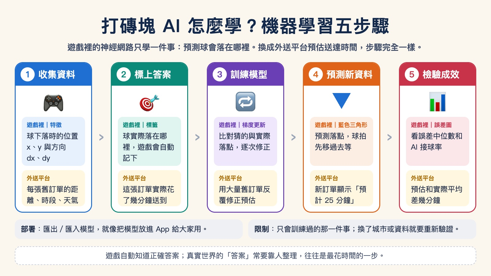
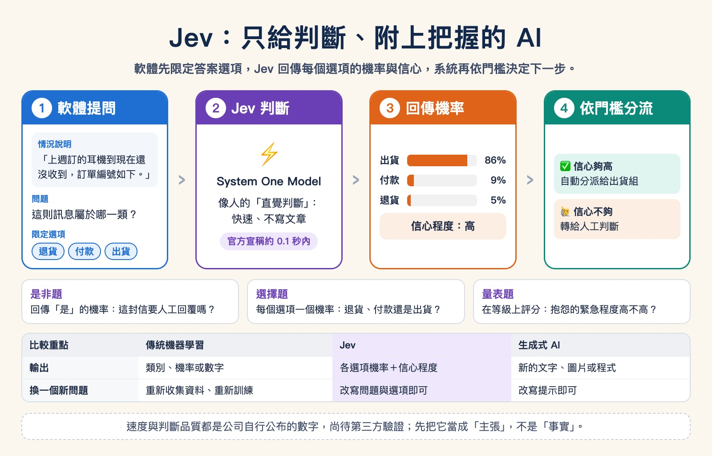
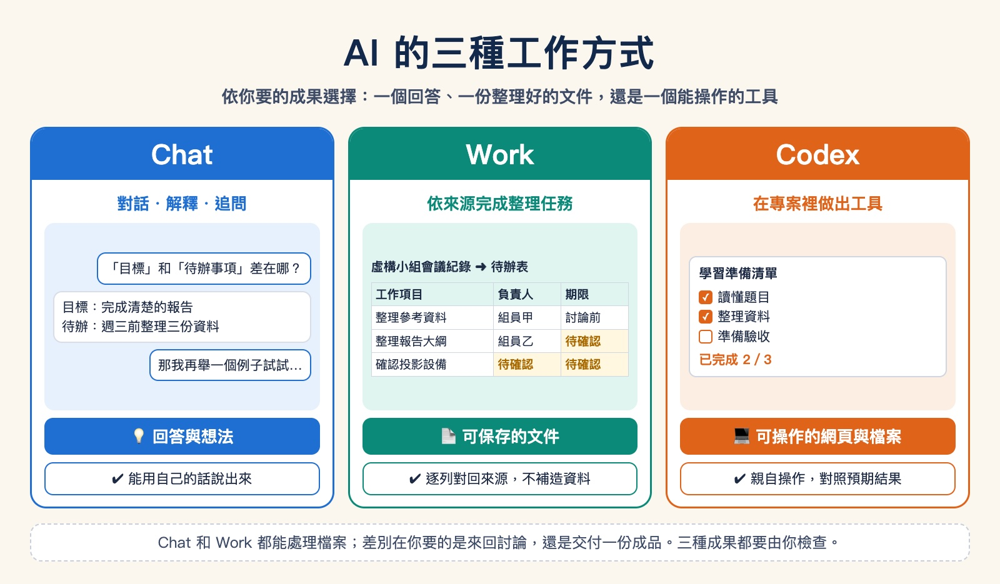
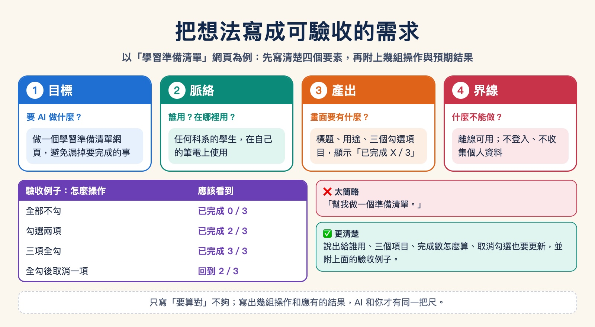
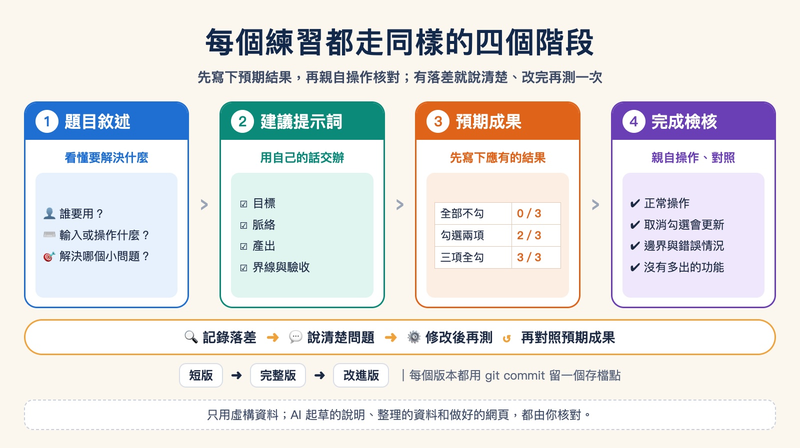

第 7 單元
從機器學習到 AI Agent
先回顧 ChatGPT 出現之前就已經在生活中工作的 AI（機器學習與辨別式 AI），用一個打磚塊遊戲看模型怎麼從例子中學會，再認識 2026 年只做判斷的新模型 Jev。最後回到交辦：依你要的成果選擇工作方式，並把想法寫成可以驗收的需求。不論你讀哪一個科系，都用得上這套判斷。
能說出機器學習「從例子學規則」的五個步驟；能分辨辨別式 AI、Jev 這類判斷模型與生成式 AI 各自交出什麼成果；能分辨「我要一個回答」、「我要整理好的成果」與「我要可操作的工具」；能寫出目標、脈絡、產出、界線與驗收例子。
01ChatGPT 之前的 AI：機器學習與辨別式 AI
2022 年底 ChatGPT 推出後，「AI」幾乎成了「會聊天、會寫東西的 AI」的代名詞。其實在那之前，AI 早已在身邊工作：信箱自動過濾垃圾郵件、銀行在刷卡瞬間判斷是否盜刷、手機用臉部辨識解鎖、影音平台推薦你可能想看的片、外送 App 估計餐點幾分鐘送到。這些 AI 大多不產生新內容，而是看了資料之後，給出一個判斷。這類 AI 稱為辨別式 AI（Discriminative AI），背後的方法就是機器學習。
機器學習：讓電腦從例子中找出規則
傳統的程式由人把規則一條條寫出來，例如「信件標題含有『中獎』就移到垃圾郵件」。但很多判斷牽涉的因素太多、太細，人寫不完，寫了也很快就被繞過。機器學習換一個做法：準備大量「過去的例子＋當時的正確答案」，讓電腦自己反覆調整，找出能預測答案的規則。學好的規則稱為模型。
- 1 收集資料過去的郵件、交易、照片、訂單等例子
- 2 標上答案每個例子的結果，例如這封信是不是垃圾郵件
- 3 訓練模型電腦反覆比對「猜的」和「正確答案」，逐步修正
- 4 預測新資料遇到沒看過的例子時，給出判斷
- 5 檢驗成效用沒看過的資料計算準確率或誤差
辨別式 AI 與生成式 AI 有什麼不同
兩者都用機器學習訓練，差別在於要回答的問題和交出的成果。辨別式 AI 回答「這是哪一類？」或「會是多少？」；生成式 AI 則依照指示產生新的文字、圖片或程式。
| 比較重點 | 辨別式 AI（ChatGPT 之前的主流） | 生成式 AI（例如 ChatGPT） |
|---|---|---|
| 回答的問題 | 「這封信是不是垃圾郵件？」「這筆刷卡是不是盜刷？」 | 「幫我把這段說明改寫得更好懂」「把會議紀錄整理成待辦表」 |
| 輸出 | 一個類別、分數或數字 | 一段新的文字、圖片、表格或程式 |
| 常見應用 | 垃圾郵件過濾、盜刷偵測、臉部解鎖、推薦、需求量預測 | 文字草稿、資料整理、報告摘要、製作網頁工具 |
| 怎麼判斷好壞 | 和正確答案比對，計算準確率或誤差 | 多半沒有唯一答案，需要人判斷內容是否正確、合用 |
| 能做的事 | 通常只會一件事：訓練它回答的那個問題 | 同一個模型可以處理許多不同的任務 |
判斷屬於哪一類
這封信是不是垃圾郵件？這則商品評論是正評還是負評？這張照片裡是貓還是狗？
預測一個數字
這份外送大約幾分鐘送到？這間房子大概能租多少錢？明天店裡大約會來多少客人？
找出不尋常的資料
這筆刷卡和平常的消費習慣差很多嗎？網站流量是不是突然暴增？工廠機台的讀數是否開始偏移？
02用打磚塊遊戲看機器學習怎麼學
下面的打磚塊遊戲有兩種模式：手動由你控制球拍；電腦（機器學習）則交給一個小型神經網路。這個神經網路只學一件事：看到球目前的位置和方向，預測球會落在哪裡。輸出是一個數字（落點的橫向位置），所以它是一個做「迴歸」的辨別式 AI。它不會聊天，也不會產生新內容，但會越玩越準。

遊戲中的每個元素，都能對應到機器學習的名詞，也能對應到你每天會用到的服務：
| 遊戲中看到的 | 機器學習的說法 | 換成外送平台（預估送達時間） |
|---|---|---|
| 球的位置與方向 | 特徵（Feature）：模型用來判斷的輸入資料。遊戲裡是 x、y 與 dx、dy | 店家到你家的距離、下單時段、天氣、店家目前的訂單量 |
| 球實際落下的位置 | 標籤（Label）：正確答案 | 這張訂單實際花了幾分鐘送到 |
| 每一次球落下 | 一筆訓練資料 | 一張過去的訂單和它的實際送達時間 |
| 梯度更新次數增加 | 訓練：依照猜錯的程度調整模型 | 用大量舊訂單反覆修正預估方式 |
| 藍色三角形 | 預測（Prediction）：模型猜的落點 | 新訂單畫面上的「預計 25 分鐘送達」 |
| 誤差圖、AI 接球率 | 模型評估：準不準？ | 預估和實際平均差幾分鐘；差超過 10 分鐘的比例 |
| 儲存、匯出、匯入模型 | 部署：把訓練好的模型拿去使用 | 把模型放進 App，每張新訂單都自動算出預估時間 |
這個遊戲裡的答案不需要人工標記：球落下時，遊戲本身就知道正確落點，模型可以立刻拿來學習。外送時間也類似，送達時系統會自動記錄。但很多真實問題沒有這麼方便，例如「這則評論是不是在酸人」，每一筆答案都需要有人讀過、判斷過，標上答案往往是最花時間的步驟。
開啟遊戲，點選「電腦（機器學習）」，再按「重置模型」。剛開始模型的參數是隨機的，球拍幾乎接不到球。
把「遊戲速度」拉到 16× 左右，觀察「誤差中位數」和「AI 接球率」。誤差圖上的紅點（接不到）會逐漸被藍點（接得到）取代：資料越多，模型越準。
按「重置模型」後改按「預先訓練 2,000 球」，模型一次看完 2,000 球的資料再上場，比較它和邊玩邊學的差別。
切回「手動」模式自己玩一會兒。你打出的每一球也會成為訓練資料，再切回電腦模式看看它學到什麼。
按「匯入檔案…」，選擇剛才下載的已訓練模型。電腦模式會立刻變得很準：這就是把訓練好的模型部署出去使用。
它只會被訓練的那一件事。遊戲中的模型只學過「球往下掉時會落在哪裡」，所以球往上飛時，球拍只會回到中間等待；它也不會告訴你為什麼這樣判斷。模型的品質取決於資料：用台北的訂單訓練的送達時間模型，搬到交通狀況完全不同的城市，表現可能變差，需要重新驗證。
ChatGPT 這類生成式 AI 也是用機器學習訓練出來的，只是它學的問題換成了「接下來最適合出現的文字是什麼」，並且用了大量文字資料。學會了這件事，同一個模型就能回答問題、整理資料、寫程式。下一節先看一個 2026 年的新例子，第 04 節再把這些 AI 使用方式放在一起比較。
03新趨勢：Jev，只做判斷的新一代 AI
2026 年 9 月，新創公司 TypeSafe AI 結束隱形期，宣布募得 4,000 萬美元種子資金，並發表第一個產品 Jev。執行長兼共同創辦人 Diogo Almeida 曾是 OpenAI 研究員，參與 ChatGPT 與 GPT-4 的研發。TypeSafe 把 Jev 稱為一種新的模型類別：System One Model。這個名稱借自心理學家康納曼（Daniel Kahneman）的說法：System 1 是快速、直覺的判斷，System 2 是緩慢、仔細的推理。Jev 不聊天、不寫文章，專門做快速的判斷，而且是給其他軟體呼叫使用的。
Jev 怎麼運作：先給選項，再回傳機率
軟體把一段「情況說明」和幾個問題一起交給 Jev，並事先限定可以接受的答案。Jev 不會寫出一段文字，而是回傳每個答案的機率，以及它對這次判斷的信心程度。官方提供三種題型：

回答是或否
回傳「這句話成立」的機率。例如：這封客服信需要真人回覆嗎？
從選項中挑一個
每個選項各有一個機率。例如：這則訊息屬於退貨、付款還是出貨詢問？
在等級上評分
在「低、中、高」這類等級上給分數。例如：這則顧客抱怨的緊急程度是低、中還是高？
因為每個答案都附有機率，使用 Jev 的系統可以設定門檻：信心夠高就自動處理，信心不夠就再查資料，或轉給人工判斷。官方舉的應用都是企業的大量重複流程，例如客服案件分類、發票審核、保險核保、資安警示分級，以及檢查 AI Agent 的工作成果。
Jev、辨別式 AI 與生成式 AI 比一比
| 比較重點 | 傳統機器學習（辨別式 AI） | Jev（System One Model） | 生成式 AI（例如 ChatGPT） |
|---|---|---|---|
| 回答的問題 | 訓練時就決定好的一個問題 | 每次由軟體提出問題，答案限定在給定的選項內 | 幾乎任何問題或指令 |
| 輸入 | 整理好的數字或類別欄位（特徵） | 一段情況說明（例如一則訊息、一張單據的內容）加上問題與選項 | 自由的文字、圖片或檔案 |
| 輸出 | 類別、機率或數字 | 各選項的機率、是非機率或量表分數，並附信心程度 | 新產生的文字、圖片或程式 |
| 換一個新問題 | 要重新收集、標註資料，再訓練一個新模型 | 依官方說明，改寫問題與選項即可，不必重新訓練 | 改寫提示即可 |
| 速度 | 很快 | 報導引述官方數字約 100 毫秒以內 | 較慢，複雜問題常需數秒以上 |
| 怎麼使用 | 嵌在系統裡自動運作 | 由程式或 AI Agent 呼叫，結果交給下一個步驟 | 人直接對話，或由 AI Agent 使用 |
| 怎麼判斷好壞 | 和正確答案比對，計算準確率 | 除了準確率，還要看機率是否可信：說「八成把握」的判斷，實際上是否約八成正確 | 多半沒有唯一答案，需要人判斷 |
簡單地說：Jev 的輸出形式像辨別式 AI（只給判斷和機率），理解能力則來自大型語言模型（看得懂一段文字描述的情況，換問題不必重新訓練）。
用打磚塊遊戲來想 Jev
第 02 節打磚塊遊戲裡的神經網路，只會回答「球會落在哪裡」。如果想問它「這一球會不會漏接？」，就得重新設計輸出、重新收集資料、重新訓練，這就是傳統機器學習「一個模型只做一件事」的特性。Jev 的想法則是：準備一個通用的判斷模型，每次換一個問題和一組選項來問它。另外，遊戲中的模型只給出一個落點，沒有說自己有多少把握；Jev 會附上信心程度，讓系統決定什麼時候交給人處理。
Jev 目前只開放候補名單的開發者試用。速度、成本與判斷品質，都是公司自行公布的測試結果，尚待第三方驗證。看到新產品的宣傳數字時，先把它當成公司的「主張」，而不是已經證實的「事實」。這也是第 1 單元「檢查 AI 的答案」的延伸：來源是誰、證據在哪裡，比說法本身更重要。
AI 的發展不是「生成式 AI 取代辨別式 AI」。許多工作流程真正需要的，是快速、可以設定門檻的判斷。Jev 這類新模型，是把大型語言模型的理解能力，用「辨別式」的形式交付給軟體使用。
資料來源（整理於 2026 年 10 月）：SiliconANGLE、Business Wire 新聞稿、Width.ai 說明。
04不同 AI 使用方式，處理不同任務
這些名詞不是彼此完全分開的盒子；一個 Agent 可以使用生成式模型與推理能力，也可以透過對話接收你的要求。
| 概念 | 做什麼 | 課堂情境 |
|---|---|---|
| 辨別式 AI／機器學習 | 依資料辨識、分類或預測。 | 打磚塊遊戲預測落點；把虛構的活動物品依用途分類，結果仍須核對。 |
| 判斷模型（如 Jev） | 在給定選項中挑答案，附上機率與信心。 | 把一則客服訊息歸類，信心不夠就交給人。 |
| 生成式 AI | 依要求產生文字、圖像或其他內容。 | 起草一段讀書方法的說明，再對照提供的資料。 |
| Chatbot | 透過對話解釋、討論與追問。 | 問「目標與待辦事項有什麼不同？」 |
| 推理模型 | 協助多步分析、比較與規劃。 | 逐步列出哪些操作值得測試，仍由你核對。 |
| AI Agent | 在授權範圍內讀取資料、操作工具並完成多步工作。 | 在指定資料夾讀取練習規格、建立網頁，再依測試結果修改。 |
名稱不是正確性的保證。回答得流暢、步驟很多或網頁很漂亮，都不能代替來源核對與實際操作。
05Chat、Work、Codex：依任務與成果選擇
第 1 單元介紹過 ChatGPT 的三種工作方式。這裡換個角度，從你要拿到什麼成果來選：Chat 是對話夥伴，Work 是處理完整任務的助理，Codex 是在專案裡製作或修改數位工具的夥伴。這是幫助你交辦工作的分類，不表示每種工具只有一項能力。
Chat 與 Work 都可能處理檔案。差別不能只看有沒有上傳附件；要看你需要的是來回討論，還是依一份資料完成多個整理步驟並交付成品。功能是否能用，仍以你的帳號、權限與工具介面為準。

| 比較重點 | Chat | Work | Codex |
|---|---|---|---|
| 主要工作 | 解釋、回答、一起想。 | 依提供的資料完成一項完整整理工作。 | 在專案中製作或修改網頁工具。 |
| 你交代什麼 | 想理解的問題，接著依回答追問。 | 資料來源、整理步驟與成品格式。 | 專案位置、使用者、操作、規則與驗收。 |
| 課堂例子 | 解釋目標與待辦事項的差別。 | 把虛構小組會議紀錄整理成待辦表。 | 製作自己的學習準備清單頁。 |
| 成果長什麼樣子 | 你聽得懂、可繼續追問的回答。 | 能保存、繼續編輯的摘要或表格。 | 自己能開啟並操作的網頁與專案檔案。 |
| 你怎麼檢查 | 能否用自己的話說明，是否符合講義。 | 每列是否對得上來源，有無補造資料。 | 自己操作、看結果、試錯誤輸入與邊界。 |
你負責說清楚情境、需求與怎樣才算對；AI 協助實作。遇到看不懂的內容，請它用一般用語說明改了哪些檔案、怎麼開啟、要測試什麼。不要因為 AI 說「完成」就省略檢查。
06直接試用：回答、整理成果與小工具
下面四個練習都用和科系無關的日常情境。每個練習都有題目、建議提示詞、預期成果與完成檢核；提示詞可以照貼，也可以改成你自己的例子。
練習 A：Chat 解釋一個學習概念
題目：同學分不清「目標」與「待辦事項」。請用準備一次小組報告的例子釐清。
我在準備一次小組報告，想弄懂「目標」和「待辦事項」有什麼不同。例子是：完成清楚的報告；週三前整理三份參考資料。
請先用兩三句話解釋，再指出這兩句各屬於哪一種。最後問我一題，讓我用自己的話回答；如果我答錯，請換一個日常例子說明。這一步只要討論，不用做網頁。預期成果：回答區分想完成的成果與具體行動，並出一題讓你判斷哪一個是待辦事項。
完成檢核：不看 AI 的回答，自己說出「完成清楚的報告是目標；週三前整理三份資料是待辦」。如果仍混淆，請它換一種說法，但保留相同的例子。
練習 B：Chat 幫忙想測試方向
題目：一份三項準備清單，勾選兩項與三項時應顯示不同結果。請 AI 說明哪些操作值得測、為什麼，再自己核對。
我想做一份準備清單，共有讀懂題目、整理資料、準備驗收三項。每勾一項，完成數就增加一項，顯示 0／3 到 3／3。
先不要製作網頁，請幫我列出「怎麼操作、應該看到什麼」的對照表：全不勾、勾兩項、三項全勾、取消其中一項。請說明為什麼每一種都值得試，最後問我還想檢查哪一種情況。預期成果：勾選兩項顯示 2／3，勾選三項顯示 3／3，取消一項後數字減少。
完成檢核：你能說出部分完成與全部完成的差別，並自己想出一種表格沒列到、但值得測的情況（例如重新整理頁面後勾選會不會消失）。
練習 C：Work 用提供的材料交付待辦表
題目：你的小組有一段會議紀錄，希望整理成可保存的待辦表。下方就是全部來源；把紀錄與提示一起貼入 Work 即可。
小組會議紀錄（全部為虛構）
目標：完成一份讀書交流報告。
組員甲：整理三份參考資料，期限為討論前。
組員乙：整理報告大綱，期限尚未決定。
待辦：確認投影設備，尚未分配負責人。
待辦：整理成果展示圖片，尚未決定負責人與期限。請只根據上面的「小組會議紀錄」，整理成待辦表，欄位是工作項目、負責人、期限、待確認事項。
沒有寫明的負責人或期限請填「待確認」，不要替小組決定。最後列出還需要討論的事情。
先在對話中給我看表格，再保存成一份可下載、用一般文字編輯器就能閱讀的文件。請告訴我檔名、放在哪裡、怎麼開啟。預期成果：四個待辦工作：整理參考資料、整理大綱、確認設備、整理圖片。只有第一項有明確期限；第三與第四項的負責人都待確認。
完成檢核：
- 逐列找回來源句子，確認沒有新增來源未提到的任務。
- 未決定的資料沒有被填成虛構姓名或日期。
- 打開交付的文件，確定表格內容與對話中的版本一致。
練習 D：Codex 製作可操作的準備清單
題目：把練習 B 的對照表變成真的網頁。在電腦上建立一個新資料夾（例如 study-checklist），用 Codex 桌面版或 VS Code 開啟它作為專案，再貼上下面的提示詞。這和「請解釋工具怎麼做」不同：你要收到能開啟、能勾選、能再次修改的檔案。
請在這個專案資料夾做一個「學習準備清單」網頁，存成一個用瀏覽器直接開啟就能使用的檔案，畫面用繁體中文。
頁面上方是標題和一句用途說明，下面有三個勾選項目：讀懂題目、整理資料、準備驗收。項目下方顯示「已完成 X／3」，勾選或取消勾選時立刻更新。
驗收例子：全部不勾顯示 0／3；勾兩項顯示 2／3；三項全勾顯示 3／3；全勾後取消一項回到 2／3。
不需要登入，不收集任何個人資料，不要加上我沒有提到的功能。完成後告訴我檔名、怎麼開啟，以及我應該照哪些步驟檢查。預期成果：一個可以離線開啟的網頁，四組驗收例子都對得上。
完成檢核：照著驗收例子逐一操作；確認沒有多出登入、帳號或其他沒要求的功能。通過之後，用 git init、git add -A、git commit 留一個存檔點，再試著提出一個小改進（例如加一個項目），確認數字變成 X／4。
做完四個練習，比較一下：對話回答、待辦文件、可操作網頁，這三種成果各自要怎麼驗收？
07把想法寫成清楚的需求
第 1 單元的提示四要素（目標、脈絡、產出、界線），用來交辦一個工具時，還要再加上一樣東西：驗收例子，也就是幾組「這樣操作，應該看到什麼」。

- 1 目標製作自己的學習準備清單，避免漏掉需要完成的事情
- 2 脈絡任何科系的學生，在自己的筆電上練習與核對
- 3 產出標題、用途與項目清楚，勾選後顯示完成數量
- 4 界線與驗收數量一致、取消勾選會更新、離線可用，不收集個人資料
太簡略：「幫我做一個準備清單。」
更清楚：「請做一個給學生使用的準備清單網頁，提供讀懂題目、整理資料、準備驗收三個勾選項目，顯示完成數量。全不選是 0／3；選兩項是 2／3；取消勾選也要更新。在本機離線使用，不收集個人資料。」
練習：先釐清需求，再動手
題目：動手做工具之前，先用 Chat 釐清：誰會使用、輸入什麼、應得到什麼、怎樣確認正確。只討論虛構的課堂例子，也可以換成你自己科系常遇到的小麻煩。
我想做「學習準備清單」，項目是讀懂題目、整理資料、準備驗收。勾選後顯示已完成幾項；取消勾選後也要更新。
請先幫我整理一份五欄表：誰使用、怎麼操作、更新規則、畫面結果、如何確認。至少寫出全不勾、勾兩項、全勾三個例子和應有的完成數。
這一步先不要製作網頁。不增加登入、個人資料或其他功能。需要我補充時，請用簡單的問題問我。預期成果：一份五欄需求表：使用者、輸入、規則、輸出、驗收。全不選是 0／3，選兩項是 2／3，全選是 3／3。
- 能用自己的話說明這份需求，而不是只照貼 AI 的回答。
- 逐項對照自己的清單需求，找到一項未講清楚的要求並補上。
- 沒有增加需求未提到的功能或個人資料。
需求表只寫「正確計算」還不夠。把至少三組操作與預期結果寫進去，AI 才能知道你如何確認「正確」。
08每個練習都走同樣的四個階段

- 1 題目敘述知道誰要用、輸入什麼、要解決哪個小問題
- 2 建議提示詞把需求寫清楚，必要時依自己的情境改寫
- 3 預期成果先知道畫面應有什麼、每種操作應得到什麼結果
- 4 完成檢核親自操作，核對數字，記錄問題與修改後結果
這也是第 4 到第 6 單元三個實作練習的共同骨架：成績報告產生器、截止日看板、促銷購物車結帳試算器，都是先講清楚規則、先寫下預期答案，再讓 Codex 動手，最後由你核對。
這些練習只使用虛構資料。AI 起草的說明、整理的資料與建立的網頁，都要對照來源或親自操作檢查；不作為成績、交易、醫療、法律或其他正式決策的依據。
這一單元結束前，留下你自己的五欄需求表。下次想請 Codex 做一個小工具時，從這張表開始。